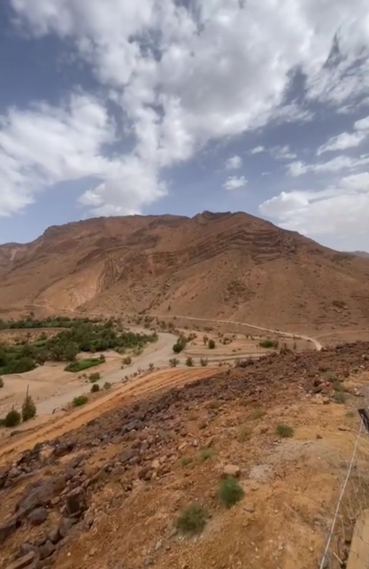
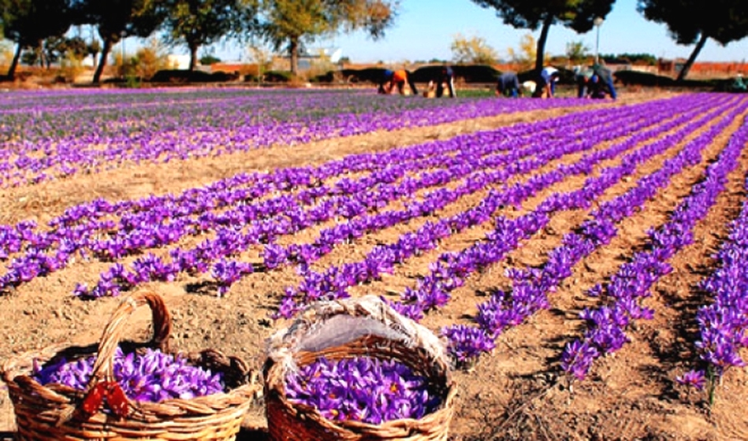

Découvrir Taliouine

Située au pied de l'Atlas marocain, Taliouine est une destination unique connue pour être la capitale mondiale du safran. Cette petite ville charmante offre un mélange exceptionnel de paysages spectaculaires, de traditions culturelles riches et d'une ambiance paisible.
Taliouine est entourée de montagnes majestueuses et de vallées verdoyantes. Les amateurs de randonnée pourront explorer les sentiers de l'Atlas, offrant des vues imprenables sur la région. Il ne faut pas manquer la vallée d'Aït Bouguemez et ses villages berbères traditionnels.
Située au pied de l'Atlas marocain, Taliouine est une destination unique connue pour être la capitale mondiale du safran. Découvrez ses paysages, son patrimoine culturel et ses traditions uniques.
Allez en bas de page pour avoir accés au plan interactif du village.
Les champs de safran
Taliouine est entourée de vastes champs de crocus sativus, où le fameux safran est cultivé. Une visite guidée dans ces champs permet de découvrir les techniques traditionnelles de culture et de récolte. Entre octobre et novembre, la saison de la floraison, vous aurez l'occasion de voir les fleurs en pleine récolte et même d’y participer.

Le Musée du Safran
Le Musée du Safran est un incontournable. Vous y apprendrez tout sur l’histoire du safran, son importance pour l'économie locale, et ses multiples usages dans la gastronomie, la médecine et la cosmétique. Des expositions interactives vous plongent dans la culture locale.
Les événements locaux
Chaque année, Taliouine célèbre le Festival International du Safran en novembre. Cet événement rassemble des visiteurs du monde entier pour célébrer cette épice précieuse. Vous pourrez y déguster des plats locaux, assister à des démonstrations de cuisine et profiter de spectacles de musique traditionnelle.
L'artisanat et les marchés
Promenez-vous dans les marchés de Taliouine pour découvrir des produits artisanaux uniques : tapis berbères, poteries et, bien sûr, des sachets de safran pur. Ces marchés sont un excellent moyen de rencontrer les habitants et de ramener chez vous un morceau de cette culture vibrante.
Taliouine n’est pas seulement la capitale du safran, mais aussi un lieu où l’hospitalité, la tradition et la beauté naturelle se rencontrent pour offrir une expérience inoubliable. Préparez vos bagages et laissez-vous envoûter par cette perle de l’Atlas marocain.
Carte de Taliouine
Explorez la région de Taliouine via cette carte interactive